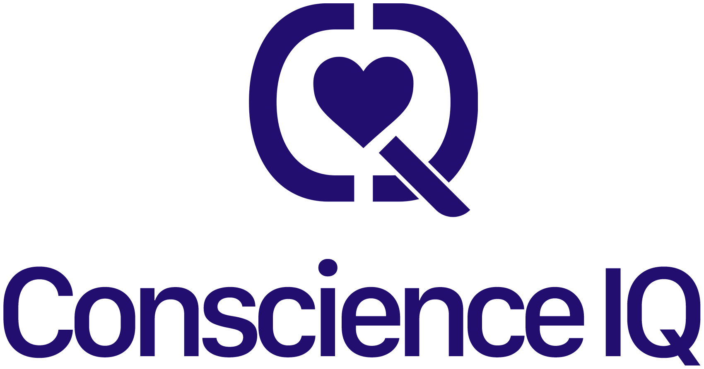

Read
Capture signals from speech, facial behavior, gaze, rhythm, stress, recovery and load.

Use casesPlatform
CIQ helps machines understand human state through biometric, behavioral and contextual signals. The aim is simple: better decisions with more human context.
Capture signals from speech, facial behavior, gaze, rhythm, stress, recovery and load.
Translate signals into simple state language: ready, strained, recovering, in flow, at risk.
Give people and teams a practical next step, not only a score or dashboard.
Future proof
CIQ is building toward AI systems that learn gradually, with human signals acting as a guardrail. Instead of exposing a model to everything at once, the sandbox introduces knowledge in context.
This creates space for safer learning, stronger human feedback and systems that prioritize human potential.